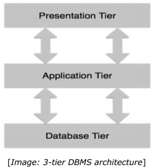

What are advantages of DBMS over traditional file based systems?
Database management systems were developed to handle the following difficulties of typical file-processing
systems supported by conventional operating systems.
1. Data redundancy and inconsistency
2. Difficulty in accessing data
3. Data isolation – multiple files and formats
4. Integrity problems
5. Atomicity of updates
6. Concurrent access by multiple users
7. Security problems
Source: http://cs.nyu.edu/courses/spring01/G22.2433-001/mod1.2.pdf
What is a Database Key ?
Database Key is a group of atributes Or a single attribute that is to identify db row uniquely Or stablish relation ships among the tablesWhat is a Super Key?
A superkey is a set of attributes of a relation schema upon which all attributes of the schema are functionally dependent. Super key can be used to uniquely identify rows in a table.What is Candidate Key ?
A Super key with no redundant attributeWhat is a Primary Key?
A Primary Key is one of the candidate keys. One of the candidate keys is selected as most important and becomes the primary key. There cannot be more that one primary keys in a table.
Employee which has columns : Emp_SSN , Emp_Number , Emp_Name
Super Keys are :
{Emp_SSN}
{Emp_Number}
{Emp_SSN, Emp_Number}
{Emp_SSN, Emp_Name}
{Emp_SSN, Emp_Number, Emp_Name}
{Emp_Number, Emp_Name}
Candidate Keys are :
{Emp_SSN}
{Emp_Number}
Only these two sets are candidate keys as all other sets are having redundant attributes that are not necessary for unique identification.
Primary key is being selected from the sets of candidate keys by database designer. So Either {Emp_SSN} or {Emp_Number} can be the primary key.
Database Introduction
Database is a collection of related data and data is a collection of facts and figures that can be processed to produce information. Mostly data represents record-able facts. Data aids in producing information,which is based on facts. For example, if we have data about marks obtained by all students, we can then conclude about toppers and average marks. Meta data is data about data; it describes the content, relation or facts and allows locating and retrieving data easily. Meta-data itself follows a layered architecture, so that when we change data at one layer, it does not affect the data at another level. This data is independent but mapped to each other. A database management system stores data in such a way that it becomes easier to retrieve, manipulate, and produce information. Database Management System or DBMS in short, refers to the technology of storing and retrieving users’ data with utmost efficiency along with safety and security features. DBMS allows its users to create their own databases which are relevant with the nature of work they want. These databases are highly configurable and offers bunch of options. Mainly of 4 types: i. Hierarchical DBMS. ii. Relational DBMS. iii. Network DBMS. iv. Inverted DBMSArchitecture
The design of a DBMS depends on its architecture. It can be centralized or decentralized or hierarchical. The architecture of a DBMS can be seen as either single tier or multi-tier. An n-tier architecture divides the whole system into related but independent n modules, which can be independently modified, altered, changed, or replaced. In 1-tier architecture, the DBMS is the only entity where the user directly sits on the DBMS and uses it. Any changes done here will directly be done on the DBMS itself. It does not provide handy tools for end-users. Database designers and programmers normally prefer to use single-tier architecture. If the architecture of DBMS is 2-tier, then it must have an application through which the DBMS can be accessed. Programmers use 2-tier architecture where they access the DBMS by means of an application. Here the application tier is entirely independent of the database in terms of operation, design, and programming. 3-Tier Architecture A 3-tier architecture separates its tiers from each other based on the complexity of the users and how they use the data present in the database. It is the most widely used architecture to design a DBMS.
Database (Data) Tier: At this tier, the database resides along with its query processing languages. We also have the relations that define the data and their constraints at this level. Application (Middle) Tier: At this tier reside the application server and the programs that access the database. For a user, this application tier presents an abstracted view of the database. End-users are unaware of any existence of the database beyond the application. At the other end, the database tier is not aware of any other user beyond the application tier. Hence, the application layer sits in the middle and acts as a mediator between the end-user and the database. User (Presentation) Tier: End-users operate on this tier and they know nothing about any existence of the database beyond this layer. At this layer, multiple views of the database can be provided by the application. All views are generated by applications that reside in the application tier. Multiple-tier database architecture is highly modifiable, as almost all its components are independent and can be changed independently.Data Model
Data models define how the logical structure of a database is modeled. Data Models are fundamental entities to introduce abstraction in a DBMS. Data models define how data is connected to each other and how they are processed and stored inside the system. The very first data model could be flat data-models, where all the data used are to be kept in the same plane. Earlier data models were not so scientific, hence they were prone to introduce lots of duplication and update anomaliesi. Entity-Relationship Model
ii. Relational Model
Entity-Relationship Model
Entity-Relationship (ER) Model is based on the notion of real-world entities and relationships among them. While formulating real-world scenario into the database model, the ER Model creates entity set, relationship set, general attributes, and constraints. ER Model is best used for the conceptual design of a database. ER Model is based on: - Entities and their attributes .- Relationships among entities. These concepts are explained below
Entity An entity in an ER Model is a real-world entity having properties called attributes. Every attribute is defined by its set of values called domain. For example, in a school database, a student is considered as an entity. Student has various attributes like name, age, class, etc. Relationship The logical association among entities is called relationship. Relationships are mapped with entities in various ways. Mapping cardinalities define the number of association between two entities. Mapping cardinalities: - one to one - one to many - many to one - many to many
Database Schema
A database schema is the skeleton structure that represents the logical view of the entire database. It defines how the data is organized and how the relations among them are associated. It formulates all the constraints that are to be applied on the data. A database schema defines its entities and the relationship among them. It contains a descriptive detail of the database, which can be depicted by means of schema diagrams. It’s the database designers who design the schema to help programmers understand the database and make it useful.A database schema can be divided broadly into two categories: Physical Database Schema: This schema pertains to the actual storage of data and its form of storage like files, indices, etc. It defines how the data will be stored in a secondary storage. Logical Database Schema: This schema defines all the logical constraints that need to be applied on the data stored. It defines tables, views, and integrity constraints.
Database Instance
A database instance is a state of operational database with data at any given time. It contains a snapshot of the database. Database instances tend to change with time. A DBMS ensures that its every instance (state) is in a valid state, by diligently following all the validations, constraints, and conditions that the database designers have imposed.Data Independence
A database system normally contains a lot of data in addition to users’ data. For example, it stores data about data, known as metadata, to locate and retrieve data easily. It is rather difficult to modify or update a set of metadata once it is stored in the database. But as a DBMS expands, it needs to change over time to satisfy the requirements of the users. If the entire data is dependent, it would become a tedious and highly complex job. Logical Data Independence Logical data is data about database, that is, it stores information about how data is managed inside. For example, a table (relation) stored in the database and all its constraints applied on that relation. Logical data independence is a kind of mechanism, which liberalizes itself from actual data stored on the disk. If we do some changes on table format, it should not change the data residing on the disk. Physical Data Independence all the schemas are logical, and the actual data is stored in bit format on the disk. Physical data independence is the power to change the physical data without impacting the schema or logical data. For example, in case we want to change or upgrade the storage system itself — suppose we want to replace hard-disks with SSD — it should not have any impact on the logical data or schemas.ER Model- Basic Concepts
The ER model defines the conceptual view of a database. It works around real world entities and the associations among them. At view level, the ER model is considered a good option for designing databases.Entity
An entity can be a real-world object, either animate or inanimate, that can be easily identifiable. For example, in a school database, students, teachers, classes, and courses offered can be considered as entities. All these entities have some attributes or properties that give them their identity. An entity set is a collection of similar types of entities. An entity set may contain entities with attribute sharing similar values. For example, a Students set may contain all the students of a school; likewise a Teachers set may contain all the teachers of a school from all faculties. Entity sets need not be disjoint. Attributes Entities are represented by means of their properties called attributes. All attributes have values. For example, a student entity may have name, class, and age as attributes. There exists a domain or range of values that can be assigned to attributes. For example, a student's name cannot be a numeric value. It has to be alphabetic. A student's age cannot be negative, etc. Types of Attributes - Simple attribute: Simple attributes are atomic values, which cannot be divided further. For example, a student's phone number is an atomic value of 10 digits. - Composite attribute: Composite attributes are made of more than one simple attribute. For example, a student's complete name may have first_name and last_name. - Derived attribute: Derived attributes are the attributes that do not exist in the physical database, but their values are derived from other attributes present in the database. For example, average_salary in a department should not be saved directly in the database, instead it can be derived. For another example, age can be derived from data_of_birth. - Single-value attribute: Single-value attributes contain single value. For example: Social_Security_Number. - Multi-value attribute: Multi-value attributes may contain more than one values. For example, a person can have more than one phone number, email_address, etc. These attribute types can come together in a way like: - simple single-valued attributes - simple multi-valued attributes - composite single-valued attributes - composite multi-valued attributes Entity-Set and Keys Key is an attribute or collection of attributes that uniquely identifies an entity among entity set. For example, the roll_number of a student makes him/her identifiable among students. - Super Key: A set of attributes (one or more) that collectively identifies an entity in an entity set. - Candidate Key: A minimal super key is called a candidate key. An entity set may have more than one candidate key. - Primary Key: A primary key is one of the candidate keys chosen by the database designer to uniquely identify the entity set.Relationship
The association among entities is called a relationship. For example, an employee works_at a department, a student enrolls in a course. Here, Works_at and Enrolls are called relationshipsRelationship Set
A set of relationships of similar type is called a relationship set. Like entities, a relationship too can have attributes. These attributes are called descriptive attributes. Degree of Relationship The number of participating entities in a relationship defines the degree of the relationship. - Binary = degree 2 - Ternary = degree 3 - n-ary = degree Mapping Cardinalities Cardinality defines the number of entities in one entity set, which can be associated with the number of entities of other set via relationship set. One-to-one: One entity from entity set A can be associated with at most one entity of entity set B and vice versa.


ER Diagram Representation
Entity Entities are represented by means of rectangles. Rectangles are named with the entity set they represent.

Relationship
Relationships are represented by diamond-shaped box. Name of the relationship is written inside the diamond-box. All the entities (rectangles) participating in a relationship are connected to it by a line. Binary Relationship and Cardinality a relationship where two entities are participating is called a binary relationship. Cardinality is the number of instance of an entity from a relation that can be associated with the relation. One-to-one: When only one instance of an entity is associated with the relationship, it is marked as '1:1'. The following image reflects that only one instance of each entity should be associated with the relationship. It depicts one-to-one relationship.One-to-many: When more than one instance of an entity is associated with a relationship, it is marked as '1:N'. The following image reflects that only one instance of entity on the left and more than one instance of an entity on the right can be associated with the relationship. It depicts one-to-many relationship.
Many-to-many: The following image reflects that more than one instance of an entity on the left and more than one instance of an entity on the right can be associated with the relationship. It depicts many-to-many relationship.
Participation Constraints · Total Participation: Each entity is involved in the relationship. Total participation is represented by double lines. · Partial participation: Not all entities are involved in the relationship. Partial participation is represented by single lines.
Inheritance Inheritance is an important feature of Generalization and Specialization. It allows lower-level entities to inherit the attributes of higher-level entities

Codd’ s Rule
Dr Edgar F. Codd, after his extensive research on the Relational Model of database systems, came up with twelve rules of his own, which according to him, a database must obey in order to be regarded as a true relational database. These rules can be applied on any database system that manages stored data using only its relational capabilities. This is a foundation rule, which acts as a base for all the other rules. Rule 1: Information Rule The data stored in a database, may it be user data or metadata, must be a value of some table cell. Everything in a database must be stored in a table format. Rule 2: Guaranteed Access Rule Every single data element (value) is guaranteed to be accessible logically with a combination of table-name, primary-key (row value), and attribute-name (column value). No other means, such as pointers, can be used to access data. Rule 3: Systematic Treatment of NULL Values The NULL values in a database must be given a systematic and uniform treatment. This is a very important rule because a NULL can be interpreted as one the following: data is missing, data is not known, or data is not applicable. Rule 4: Active Online Catalog The structure description of the entire database must be stored in an online catalog, known as data dictionary, which can be accessed by authorized users. Users can use the same query language to access the catalog which they use to access the database itself. Rule 5: Comprehensive Data Sub-Language Rule A database can only be accessed using a language having linear syntax that supports data definition, data manipulation, and transaction management operations. This language can be used directly or by means of some application. If the database allows access to data without any help of this language, then it is considered as a violation. Rule 6: View Updating Rule All the views of a database, which can theoretically be updated, must also be updatable by the system. Rule 7: High-Level Insert, Update, and Delete Rule A database must support high-level insertion, updation, and deletion. This must not be limited to a single row, that is, it must also support union, intersection and minus operations to yield sets of data records. Rule 8: Physical Data Independence The data stored in a database must be independent of the applications that access the database. Any change in the physical structure of a database must not have any impact on how the data is being accessed by external applications. Rule 9: Logical Data Independence The logical data in a database must be independent of its user’s view (application). Any change in logical data must not affect the applications using it. For example, if two tables are merged or one is split into two different tables, there should be no impact or change on the user application. This is one of the most difficult rule to apply. Rule 10: Integrity Independence A database must be independent of the application that uses it. All its integrity constraints can be independently modified without the need of any change in the application. This rule makes a database independent of the front-end application and its interface. Rule 11: Distribution Independence The end-user must not be able to see that the data is distributed over various locations. Users should always get the impression that the data is located at one site only. This rule has been regarded as the foundation of distributed database systems. Rule 12: Non-Subversion Rule If a system has an interface that provides access to low-level records, then the interface must not be able to subvert the system and bypass security and integrity constraints.Relational data model
Relational data model is the primary data model, which is used widely around the world for data storage and processing. This model is simple and it has all the properties and capabilities required to process data with storage efficiency. Concepts Tables: In relational data model, relations are saved in the format of Tables. This format stores the relation among entities. A table has rows and columns, where rows represent records and columns represent the attributes. Tuple: A single row of a table, which contains a single record for that relation, is called a tuple. Relation instance: A finite set of tuples in the relational database system represents relation instance. Relation instances do not have duplicate tuples. Relation schema: A relation schema describes the relation name (table name), attributes, and their names. Relation key: Each row has one or more attributes, known as relation key, which can identify the row in the relation (table) uniquely. Attribute domain: Every attribute has some predefined value scope, known as attribute domain. Constraints every relation has some conditions that must hold for it to be a valid relation. These conditions are called Relational Integrity Constraints. There are three main integrity constraints: · Key constraints · Domain constraints · Referential integrity constraints Key Constraints There must be at least one minimal subset of attributes in the relation, which can identify a tuple uniquely. This minimal subset of attributes is called key for that relation. If there are more than one such minimal subset, these are called candidate keys. Key constraints force that: · In a relation with a key attribute, no two tuples can have identical values for key attributes. · A key attribute cannot have NULL values. Key constraints are also referred to as Entity Constraints. Domain Constraints Attributes have specific values in real-world scenario. For example, age can only be a positive integer. The same constraints have been tried to employ on the attributes of a relation. Every attribute is bound to have a specific range of values. For example, age cannot be less than zero and telephone numbers cannot contain a digit outside 0-9. Referential Integrity Constraints Referential integrity constraints work on the concept of Foreign Keys. A foreign key is a key attribute of a relation that can be referred in other relation. Referential integrity constraint states that if a relation refers to a key attribute of a different or same relation, then that key element must exist. Weak Entity Sets A weak entity set is one which does not have any primary key associated with it.
Normalization
If a database design is not perfect, it may contain anomalies like · Update anomalies: If data items are scattered and are not linked to each other properly, then it could lead to strange situations. For example, when we try to update one data item having its copies scattered over several places, a few instances get updated properly while a few others are left with old values. Such instances leave the database in an inconsistent state. · Deletion anomalies: We tried to delete a record, but parts of it were left undeleted because of unawareness, the data is also saved somewhere else. · Insert anomalies: We tried to insert data in a record that does not exist at all. Normalization is a method to remove all these anomalies and bring the database to a consistent state.Functional Dependency
The attribute of table is said to dependent on each other when an attribute of a table uniquely identifies another attribute of the same table. For example , Student(Id,Name,Age) table id uniquely identifies other attributes like name and age , by knowing the student id we can find the student name and age , there for name and age are said to functionally dependent on id and can be written as Id -> NameTransitive Dependency
A functional dependency is said to be transitive if it is indirectly formed by two functional dependencies For example, X->Z is a transitive dependency if the following two functional dependencies hold true: X->Y Y->Z Armstrong's Axioms If F is a set of functional dependencies then the closure of F, denoted as F+, is the set of all functional dependencies logically implied by F. Armstrong's Axioms are a set of rules that, when applied repeatedly, generates a closure of functional dependencies. · Reflexive rule: If alpha is a set of attributes and beta is_subset_of alpha, then alpha holds beta. · Augmentation rule: If a → b holds and y is attribute set, then ay → by also holds. That is adding attributes in dependencies, does not change the basic dependencies. · Transitivity rule: Same as transitive rule in algebra, if a → b holds and b→ c holds, then a → c also holds. a → b is called as a functionally that determines bFirst Normal Form
First Normal Form is defined in the definition of relations (tables) itself. This rule defines that all the attributes in a relation must have atomic domains. The values in an atomic domain are indivisible units.
Second Normal Form Before we learn about the second normal form, we need to understand the following: · Prime attribute: An attribute, which is a part of the prime-key, is known as a prime attribute. · Non-prime attribute: An attribute, which is not a part of the prime-key, is said to be a non-prime attribute. If we follow second normal form, then every non-prime attribute should be fully functionally dependent on prime key attribute. That is, if X → A holds, then there should not be any proper subset Y of X for which Y → A also holds true.


We find that in the above Student_detail relation, Stu_ID is the key and only prime key attribute. We find that City can be identified by Stu_ID as well as Zip itself. Neither Zip is a superkey nor is City a prime attribute. Additionally, Stu_ID→ Zip → City, so there exists transitive dependency. To bring this relation into third normal form, we break the relation into two relations as follows:

Join
Join is a combination of a Cartesian product followed by a selection process. A Join operation pairs two tuples from different relations, if and only if a given join condition is satisfied. Theta (θ) Join Theta join combines tuples from different relations provided they satisfy the theta condition. The join condition is denoted by the symbol θ. Notation: R1 ⋈θ R2 R1 and R2 are relations having attributes (A1, A2, .., An) and (B1, B2,.. ,Bn) such that the attributes don’t have anything in common, that is, R1 ∩ R2 = Φ. Theta join can use all kinds of comparison operators.

Student_Detail = STUDENT ⋈Student.Std = Subject.Class SUBJECT
Equijoin When Theta join uses only equality comparison operator, it is said to be equijoin. The above example corresponds to equijoin. Natural Join (⋈) Natural join does not use any comparison operator. It does not concatenate the way a Cartesian product does. We can perform a Natural Join only if there is at least one common attribute that exists between two relations. In addition, the attributes must have the same name and domain.
Natural join acts on those matching attributes where the values of attributes in both the relations are same.
Outer Joins
Theta Join, Equijoin, and Natural Join are called inner joins. An inner join includes only those tuples with matching attributes and the rest are discarded in the resulting relation. Therefore, we need to use outer joins to include all the tuples from the participating relations in the resulting relation. There are three kinds of outer joins: left outer join, right outer join, and full outer join Left Outer Join(R-⋈ S) All the tuples from the Left relation, R, are included in the resulting relation. If there are tuples in R without any matching tuple in the Right relation S, then the S-attributes of the resulting relation are made NULL.


Database Storage
Databases are stored in file formats, which contain records. At physical level, the actual data is stored in electromagnetic format on some device. These storage devices can be broadly categorized into three types: Primary Storage: The memory storage that is directly accessible to the CPU comes under this category. CPU's internal memory (registers), fast memory (cache), and main memory (RAM) are directly accessible to the CPU, as they are all placed on the motherboard or CPU chipset. This storage is typically very small, ultra-fast, and volatile. Primary storage requires continuous power supply in order to maintain its state. In case of a power failure, all its data is lost. Secondary Storage: Secondary storage devices are used to store data for future use or as backup. Secondary storage includes memory devices that are not a part of the CPU chipset or motherboard, for example, magnetic disks, optical disks (DVD, CD, etc.), hard disks, flash drives, and magnetic tapes. Hard disk drives are the most common secondary storage devices in present computer systems. These are called magnetic disks because they use the concept of magnetization to store information. Hard disks consist of metal disks coated with magnetizable material. These disks are placed vertically on a spindle. A read/write head moves in between the disks and is used to magnetize or de-magnetize the spot under it. A magnetized spot can be recognized as 0 (zero) or 1 (one). Hard disks are formatted in a well-defined order to store data efficiently. A hard disk plate has many concentric circles on it, called tracks. Every track is further divided into sectors. A sector on a hard disk typically stores 512 bytes of data Tertiary Storage: Tertiary storage is used to store huge volumes of data. Since such storage devices are external to the computer system, they are the slowest in speed. These storage devices are mostly used to take the back up of an entire system. Optical disks and magnetic tapes are widely used as tertiary storageRAID
RAID stands for Redundant Array of Independent Disks, which is a technology to connect multiple secondary storage devices and use them as a single storage media. RAID consists of an array of disks in which multiple disks are connected together to achieve different goals. RAID levels define the use of disk arrays. RAID 0: In this level, a striped array of disks is implemented. The data is broken down into blocks and the blocks are distributed among disks. Each disk receives a block of data to write/read in parallel. It enhances the speed and performance of the storage device. There is no parity and backup in Level 0.


RAID 5: RAID 5 writes whole data blocks onto different disks, but the parity bits generated for data block stripe are distributed among all the data disks rather than storing them on a different dedicated disk.

File Operations Operations on database files can be broadly classified into two categories: · Update Operations · Retrieval Operations Update operations change the data values by insertion, deletion, or update. Retrieval operations, on the other hand, do not alter the data but retrieve them after optional conditional filtering. In both types of operations, selection plays a significant role. Other than creation and deletion of a file, there could be several operations, which can be done on files. · Open: A file can be opened in one of the two modes, read mode or write mode. In read mode, the operating system does not allow anyone to alter data. In other words, data is read only. Files opened in read mode can be shared among several entities. Write mode allows data modification. Files opened in write mode can be read but cannot be shared. · Locate: Every file has a file pointer, which tells the current position where the data is to be read or written. This pointer can be adjusted accordingly. Using find (seek) operation, it can be moved forward or backward. · Read: By default, when files are opened in read mode, the file pointer points to the beginning of the file. There are options where the user can tell the operating system where to locate the file pointer at the time of opening a file. The very next data to the file pointer is read. · Write: User can select to open a file in write mode, which enables them to edit its contents. It can be deletion, insertion, or modification. The file pointer can be located at the time of opening or can be dynamically changed if the operating system allows to do so. · Close: This is the most important operation from the operating system’s point of view. When a request to close a file is generated, the operating system - removes all the locks (if in shared mode), - saves the data (if altered) to the secondary storage media, and - releases all the buffers and file handlers associated with the file. The organization of data inside a file plays a major role here. The process to locate the file pointer to a desired record inside a file various based on whether the records are arranged sequentially or clustered.
Indexing
Indexing is a data structure technique to efficiently retrieve records from the database files based on some attributes on which the indexing has been done. Indexing in database systems is similar to what we see in books. Indexing is defined based on its indexing attributes. Indexing can be of the following types: · Primary Index: Primary index is defined on an ordered data file. The data file is ordered on a key field. The key field is generally the primary key of the relation. · Secondary Index: Secondary index may be generated from a field which is a candidate key and has a unique value in every record, or a non-key with duplicate values. · Clustering Index: Clustering index is defined on an ordered data file. The data file is ordered on a non-key field. Ordered Indexing is of two types: · Dense Index · Sparse Index Dense Index In dense index, there is an index record for every search key value in the database. This makes searching faster but requires more space to store index records itself. Index records contain search key value and a pointer to the actual record on the disk
Sparse Index
In sparse index, index records are not created for every search key. An index record here contains a search key and an actual pointer to the data on the disk. To search a record, we first proceed by index record and reach at the actual location of the data. If the data we are looking for is not where we directly reach by following the index, then the system starts sequential search until the desired data is found.
Multilevel Index
Index records comprise search-key values and data pointers. Multilevel index is stored on the disk along with the actual database files. As the size of the database grows, so does the size of the indices. There is an immense need to keep the index records in the main memory so as to speed up the search operations. If single-level index is used, then a large size index cannot be kept in memory which leads to multiple disk accesses. Multi-level Index helps in breaking down the index into several smaller indices in order to make the outermost level so small that it can be saved in a single disk block, which can easily be accommodated anywhere in the main memory.
B+ Tree
A B+ tree is a balanced binary search tree that follows a multi-level index format. The leaf nodes of a B+ tree denote actual data pointers. B+ tree ensures that all leaf nodes remain at the same height, thus balanced. Additionally, the leaf nodes are linked using a link list; therefore, a B+ tree can support random access as well as sequential access. Structure of B+ Tree every leaf node is at equal distance from the root node. A B+ tree is of the order n where n is fixed for every B+ tree.
- Split node into two parts
- Partition at i = ⌊(m+1)/2⌋
- First i entries are stored in one node.
- Rest of the entries (i+1 onwards) are moved to a new node.
- ith key is duplicated at the parent of the leaf
If
a non-leaf node overflows:
- Split node into two
parts.
-Partition the node at
i
= ⌈(m+1)/2⌉.
-Entries up to i
are
kept in one node.
-Rest of the entries are
moved to a new node.
· B+ tree entries are deleted at the leaf nodes.
· The target entry is searched and deleted.
o If it is an internal node, delete and replace with the entry from the left
position.
· After deletion, underflow is tested,
o If underflow occurs, distribute the entries from the nodes left to it.
· If distribution is not possible from left, then
o Distribute the entries from the nodes right to it.
· If distribution is not possible from left or from right, then
o Merge the node with left and right to it.
Hashing
Hashing is an effective technique to calculate the direct location of a data record on the disk without using index structure. Hashing uses hash functions with search keys as parameters to generate the address of a data record. Hash Organization · Bucket: A hash file stores data in bucket format. Bucket is considered a unit of storage. A bucket typically stores one complete disk block, which in turn can store one or more records. · Hash Function: A hash function, h, is a mapping function that maps all the set of search-keys K to the address where actual records are placed. It is a function from search keys to bucket addresses. Static Hashing In static hashing, when a search-key value is provided, the hash function always computes the same address. For example, if mod-4 hash function is used, then it shall generate only 5 values. The output address shall always be same for that function. The number of buckets provided remains unchanged at all times.

Dynamic Hashing The problem with static hashing is that it does not expand or shrink dynamically as the size of the database grows or shrinks. Dynamic hashing provides a mechanism in which data buckets are added and removed dynamically and on demand. Dynamic hashing is also known as extended hashing. Hash function, in dynamic hashing, is made to produce a large number of values and only a few are used initially.
Organization The prefix of an entire hash value is taken as a hash index. Only a portion of the hash value is used for computing bucket addresses. Every hash index has a depth value to signify how many bits are used for computing a hash function. These bits can address 2n buckets. When all these bits are consumed — that is, when all the buckets are full — then the depth value is increased linearly and twice the buckets are allocated. Operation · Querying: Look at the depth value of the hash index and use those bits to compute the bucket address. · Update: Perform a query as above and update the data. · Deletion: Perform a query to locate the desired data and delete the same. · Insertion: Compute the address of the bucket. o If the bucket is already full, § Add more buckets. § Add additional bits to the hash value. § Re-compute the hash function. o Else, § Add data to the bucket, o If all the buckets are full, perform the remedies of static hashing. Hashing is not favorable when the data is organized in some ordering and the queries require a range of data. When data is discrete and random, hash performs the best. Hashing algorithms have high complexity than indexing. All hash operations are done in constant time
Transaction
A transaction can be defined as a group of tasks. A single task is the minimum processing unit which cannot be divided further. Let’s take an example of a simple transaction. Suppose a bank employee transfers Rs 500 from A's account to B's account. This very simple and small transaction involves several low-level tasks. A’s AccountOpen_Account(A) Old_Balance = A.balance New_Balance = Old_Balance - 500 A.balance = New_Balance Close_Account(A)
B’s Account
Open_Account(B) Old_Balance = B.balance New_Balance = Old_Balance + 500 B.balance = New_Balance Close_Account(B) ACID Properties
A transaction is a very small unit of a program and it may contain several lowlevel tasks. A transaction in a database system must maintain Atomicity, Consistency, Isolation, and Durability — commonly known as ACID properties — in order to ensure accuracy, completeness, and data integrity.
· Atomicity: This property states that a transaction must be treated as an atomic unit, that is, either all of its operations are executed or none. There must be no state in a database where a transaction is left partially completed. States should be defined either before the execution of the transaction or after the execution/abortion/failure of the transaction.
· Consistency: The database must remain in a consistent state after any transaction. No transaction should have any adverse effect on the data residing in the database. If the database was in a consistent state before the execution of a transaction, it must remain consistent after the execution of the transaction as well.
· Durability: The database should be durable enough to hold all its latest updates even if the system fails or restarts. If a transaction updates a chunk of data in a database and commits, then the database will hold the modified data. If a transaction commits but the system fails before the data could be written on to the disk, then that data will be updated once the system springs back into action.
· Isolation: In a database system where more than one transaction are being executed simultaneously and in parallel, the property of isolation states that all the transactions will be carried out and executed as if it is the only transaction in the system. No transaction will affect the existence of any other transaction. Serializability
When multiple transactions are being executed by the operating system in a multiprogramming environment, there are possibilities that instructions of one transaction are interleaved with some other transaction.
· Schedule: A chronological execution sequence of a transaction is called a schedule. A schedule can have many transactions in it, each comprising of a number of instructions/tasks.
· Serial Schedule: It is a schedule in which transactions are aligned in such a way that one transaction is executed first. When the first transaction completes its cycle, then the next transaction is executed.
Transactions are ordered one after the other. This type of schedule is called a serial schedule, as transactions are executed in a serial manner. In a multi-transaction environment, serial schedules are considered as a benchmark. The execution sequence of an instruction in a transaction cannot be
changed, but two transactions can have their instructions executed in a random fashion. This execution does no harm if two transactions are mutually independent and working on different segments of data; but in case these two transactions are working on the same data, then the results may vary. This ever-varying result may bring the database to an inconsistent state. To resolve this problem, we allow parallel execution of a transaction schedule, if its transactions are either serializable or have some equivalence relation among them.
States of Transactions

Partially Committed: When a transaction executes its final operation, it is said to be in a partially committed state.
Failed: A transaction is said to be in a failed state if any of the checks made by the database recovery system fails. A failed transaction can no longer proceed further.
Aborted: If any of the checks fails and the transaction has reached a failed state, then the recovery manager rolls back all its write operations on the database to bring the database back to its original state where it was prior to the execution of the transaction. Transactions in this state are called aborted. The database recovery module can select one of the two operations after a transaction aborts:
o Re-start the transaction
o Kill the transaction
Committed: If a transaction executes all its operations successfully, it is said to be committed. All its effects are now permanently established on the database system.
Concurrency Control
In a multiprogramming environment where multiple transactions can be executed simultaneously, it is highly important to control the concurrency of transactions. We have concurrency control protocols to ensure atomicity, isolation, and serializability of concurrent transactions. Concurrency control protocols can be broadly divided into two categories: · Lock-based protocols · Timestamp-based protocols Lock-based Protocols Database systems equipped with lock-based protocols use a mechanism by which any transaction cannot read or write data until it acquires an appropriate lock on it. Locks are of two kinds: · Binary Locks A lock on a data item can be in two states; it is either locked or unlocked. · Shared/exclusive Locks this type of locking mechanism differentiates the locks based on their uses. If a lock is acquired on a data item toperform a write operation, it is an exclusive lock. Allowing more than one transaction to write on the same data item would lead the database into an inconsistent state. Read locks are shared because no data value is being changed.Deadlock
In a multi-process system, deadlock is an unwanted situation that arises in a shared resource environment, where a process indefinitely waits for a resource that is held by another process. For example, assume a set of transactions {T0, T1, T2, ...,Tn}. T0 needs a resource X to complete its task. Resource X is held by T1, and T1 is waiting for a resource Y, which is held by T2. T2 is waiting for resource Z, which is held by T0. Thus, all the processes wait for each other to release resources. In this situation, none of the processes can finish their task. This situation is known as a deadlock. Deadlocks are not healthy for a system. In case a system is stuck in a deadlock, the transactions involved in the deadlock are either rolled back or restarted. Deadlock Prevention To prevent any deadlock situation in the system, the DBMS aggressively inspects all the operations, where transactions are about to execute. The DBMS inspects the operations and analyzes if they can create a deadlock situation. If it finds that a deadlock situation might occur, then that transaction is never allowed to be executed. There are deadlock prevention schemes that use timestamp ordering mechanism of transactions in order to predetermine a deadlock situation. Wait-Die Scheme In this scheme, if a transaction requests to lock a resource (data item), which is already held with a conflicting lock by another transaction, then one of the two possibilities may occur: § If TS(Ti) < TS(Tj) — that is Ti, which is requesting a conflicting lock, is older than Tj — then Ti is allowed to wait until the data-item is available. § If TS(Ti) > TS(tj) — that is Ti is younger than Tj — then Ti dies. Ti is restarted later with a random delay but with the same timestamp. This scheme allows the older transaction to wait but kills the younger one. Wound-Wait Scheme In this scheme, if a transaction requests to lock a resource (data item), which is already held with conflicting lock by another transaction, one of the two possibilities may occur: - If TS(Ti) < TS(Tj), then Ti forces Tj to be rolled back — that is Ti wounds Tj. Tj is restarted later with a random delay but with the same timestamp. - If TS(Ti) > TS(Tj), then Ti is forced to wait until the resource is available. This scheme allows the younger transaction to wait; but when an older transaction requests an item held by a younger one, the older transaction forces the younger one to abort and release the item. In both the cases, the transaction that enters the system at a later stage is aborted. Deadlock Avoidance Aborting a transaction is not always a practical approach. Instead, deadlockavoidance mechanisms can be used to detect any deadlock situation in advance. Methods like "wait-for graph" are available but they are suitable for only thosesystems where transactions are lightweight having fewer instances of resource.In a bulky system, deadlock prevention techniques may work well. Wait-for Graph This is a simple method available to track if any deadlock situation may arise. For each transaction entering into the system, a node is created. When a transaction Ti requests for a lock on an item, say X, which is held by some other transaction Tj, a directed edge is created from Ti to Tj. If Tj releases item X, the edge between them is dropped and Ti locks the data item. The system maintains this wait-for graph for every transaction waiting for some data items held by others. The system keeps checking if there's any cycle in the graph.